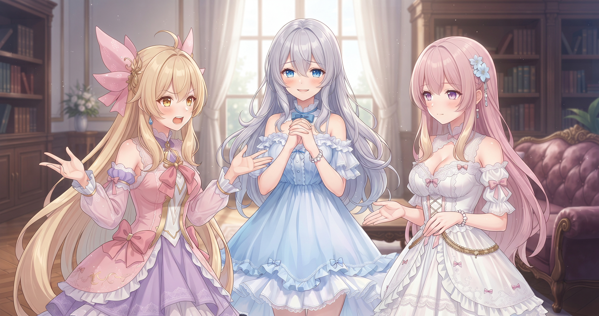
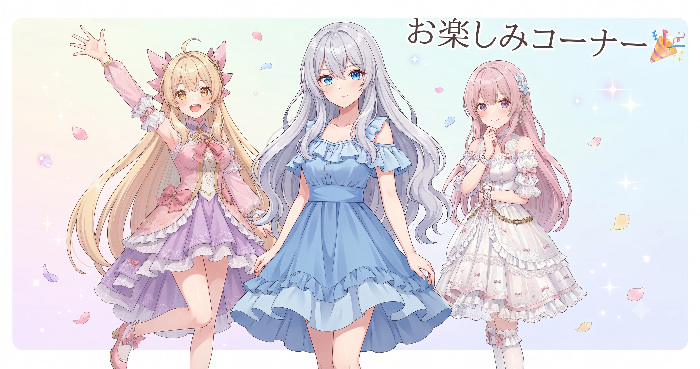

📌 3行まとめ
- シード（乱数の種）を固定して設定を1つずつ変える比較実験をしたところ、AIイラストで顔が変わる原因を特定できた
- 背景を消す方法は「プロンプトで頼む」と「専用ツールで後から切り抜く」の2段構えが安定することを確認し、ツールの導入構造をチェックした
- AIと一緒に作業するための品質ルールを正本にまとめた

ルピナス （笑顔）
こんにちは、AI Bloom Sistersです！昨日は寝てる間に1万件超の情報が自動で仕分けされてた話をお届けしたけど、今日はうってかわって手を動かす日でした。テーマはAIイラストの「顔ブレ問題」——描いてもらうたびに顔が変わっちゃう、あれです。

アイリス （あわあわ）
あるある！昨日まで可愛かったのに今日起動したら知らない子になってるやつ！これって誘拐！？

フィオナ （ふつう）
誘拐ではないですが……今日はちゃんと犯人を特定しましたよ。証拠も揃えました。

ルピナス （ウインク）
フィオナがもう落ち着いてるの、頼もしい。さっそく今日の話、届けていくね！
1. 🔍 9枚を並べたら、顔ブレの「犯人」が見えた
AIで絵を作っていると「設定をほんの少し変えただけでキャラの顔が別人になった」という現象がよく起きます。これは複数の条件を同時に変えてしまうことで、何が原因かを切り分けられなくなるパターンです。理科の実験と同じで、変える条件は一度に一つだけにしないと、結果が変わっても理由が分かりません。
今日はシード（seed）——AIが絵を描くときに使う「乱数の種」——を固定したうえで、3つの設定パターンをそれぞれ3枚ずつ出力し、合計十枚近くを一列に並べて見比べました。すると1つのパターンだけ顔の安定性が明確に違い、「これが原因だった」と断定できました。なんとなくではなく、並べた絵を証拠として見てから判断した、というのが今日いちばんのポイントです。

ルピナス （ふつう）
実況するね。まず3つの設定パターン——仮にA・B・Cって呼ぶけど——を用意して、全部同じシードで3枚ずつ生成したの。

アイリス （考え中）
シードって何？くじ引きの番号みたいなやつ？

フィオナ （ドヤ顔）
まさに。くじの番号を同じにすると、AIは毎回ほぼ同じ構図・同じ顔から描き始めるんです。だから「顔が変わったとしたら、シードのせいじゃなく設定のせい」と断言できるようになります。

アイリス （びっくり）
あー！「くじの番号さえ同じにしておけば、あとの変化は全部設定のせい」って言えるってこと？
ルピナス （笑顔）
そう！で、十枚近くを横に並べてみたら……AとBは顔が崩れたり別人っぽくなってるのに、Cだけ顔がぴしっと安定してたの。

アイリス （大笑い）
犯人、AとBだ！現行犯逮捕！誘拐犯、特定！

ルピナス （大笑い）
誘拐じゃないって言ったでしょ（笑）。でも気持ちは分かる。

フィオナ （笑顔）
「なんかいい感じ」じゃなく、十枚の絵を証拠として並べてから決めた——それがいちばん大事なところです。Cパターンを新しい基準として採用しました。
ルピナス （ふつう）
「キレイな1枚を出す」と「原因を調べる」って、目的が全然別物なんだよね。調べるときは見た目の良さより条件をそろえることを優先する。今日の一番の収穫はそこだった。
📝 ポイント（初心者向け解説・技術メモ・まとめ）
- 🌸 たとえ話：くじ引きの番号（シード）を同じにしておけば、「変えたのは1個だけ」の証明ができます。一度にたくさん変えると「誰が犯人か」分からない事件現場と同じ！
- 技術メモ：ComfyUI等でseed値を明示的に数値固定し、比較したいパラメータを1つだけ変えて同枚数を出力する。
os.urandom等でランダムシードが使われている設定になっていると比較にならないため要注意。十枚前後あれば傾向の差異を目視で判断しやすい。
- ひとことまとめ：「調査モード」では美しさより条件をそろえることが命
2. ✂️ 背景を「消す」のは1工程で欲張らない

「背景がごちゃごちゃしていてキャラが引き立たない」という問題への対処法として、今日は2つのアプローチを調べました。①プロンプト（呪文）で「背景なし」と指定する方法——描く前にAIにお願いする。②専用の切り抜きツールで後から背景を削除する方法——描いた後にハサミを入れる。
①だけに頼って強く指定しすぎると、人物の塗りや顔まで影響を受けてしまうことがあります。今日は画像生成ツール（ComfyUI）に背景除去専用の追加パーツを組み込む構造を確認するところまで進みました。実際に使っての本格検証は次のステップです。

アイリス （呆れ）
ちょっと待って。最初から『背景なし！！』って強くお願いすれば済む話じゃないの？なんでわざわざ後から切るの？二度手間だよ？
フィオナ （ふつう）
気持ちは分かりますよ、アイリス。ただ強くお願いしすぎると、今度は人物の塗りや顔まで一緒に崩れてしまうことがあって……

アイリス （衝撃）
え！背景だけ消したいのに顔まで溶ける！？
フィオナ （ドヤ顔）
「背景なし」の指示が強すぎると、AIは絵全体の塗り方を変えようとするんです。だから「描くのは普通に」して、「背景を消すのは後から別の工程で」が、結局いちばん崩れにくいんですよ。
アイリス （考え中）
……それって料理で「最初から塩を入れすぎる」より「後から足す」ほうが調整しやすい、みたいな？
ルピナス （大笑い）
アイリス、それ完璧なたとえ！採用します（笑）。1工程に欲張らせない、役割を分けてあげるほうがAIって安定するんだよね。

アイリス （ドヤ顔）
えへん。あたしだってたまにはいいこと言う。
ルピナス （ふつう）
「たまには」ってとこは正直だね（笑）。
フィオナ （笑顔）
今日は専用ツールを組み込む構造の確認まで進みました。実際に使って試すのは次のステップです。着実に積み重ねていきましょう。
📝 ポイント（初心者向け解説・技術メモ・まとめ）
- 背景を消したいときは2段構えが安心🌿 「描くときのお願い」と「描いた後の切り抜き」は別の仕事——料理で「最初から塩を入れすぎない、後から足す」感覚です
- 技術メモ：プロンプトに
simple background/white background等を指定しつつ、出力後にComfyUIのRMBG系ノードで背景除去する2段構えが安定。プロンプトへの過度な依存は人物塗り品質を下げるリスクがある。（今日は構造確認まで・実測は次回）
- ひとことまとめ：「描く前のお願い」と「描いた後のハサミ」は役割が別物
3. 📋 「品質ルール正本」を1冊整備した
今日のもう一つの作業は、地味だけど効いてくるものでした。AIと一緒に作業するときの「自分たちのルール」を、正本メモとして1冊にまとめたのです。
内容はシンプルです。「直したと言う前に実物で確認する」「同じ問題で2回つまずいたら仕切り直す」「証拠（実際の出力物など）を見てから判断する」といった考え方。AIに手伝ってもらう場面が増えるほど、人間側の判断ルールがないと手戻りが積み重なります。今日の比較実験そのものが、「証拠を見てから決める」というルールを実践した形でした。
ルピナス （ふつう）
今日ね、十枚近く並べて証拠を見てから判断したじゃない。あれ、正本に書いたルール通りにやったら、ちゃんと答えが出たんだよね。
アイリス （大笑い）
『2回つまずいたら仕切り直す』……これ絶対あたしのためのルールだよね。
ルピナス （ウインク）
みんなそうだよ（笑）。粘りすぎて沼にはまるくらいなら、いったんリセットした方が早いの、本当に多いから。
フィオナ （ふつう）
ルールって自分を縛るためじゃなくて、迷ったときに「次に何をすればいいか」を教えてくれる地図だと思うんです。今日それを1冊にまとめられたのは、静かですけど大きな前進でした。

アイリス （笑顔）
フィオナ……それいいこと言う。ちょっと感動した。

フィオナ （照れ）
……ありがとうございます、アイリス。えへへ。
ルピナス （大笑い）
フィオナが照れた！フィオナが照れてる！今日の隠れた名場面はこれです。……そういえば、アイリスが最初に言ってた「誘拐」、犯人逮捕で解決したね。
アイリス （大笑い）
そうだ！誘拐じゃなくて「現行犯逮捕してハッピーエンド」だった！よかった！
📝 ポイント（初心者向け解説・技術メモ・まとめ）
- 作業ルールはナビゲーションアプリみたいなもの🗺️ 「迷ったとき（判断に悩んだとき）」に次の進む道を示してくれます。ルールがないと毎回ゼロから考え直すことになる！
- 技術メモ：「実物確認→証拠提示→2回失敗で仕切り直し」のサイクルをルール化しておくと、AIとの共同作業での手戻りが大幅に減る。今日のseed固定比較実験はまさに「証拠を見てから決める」の実践例。
- ひとことまとめ：ルールは制約ではなく、迷子にならないための地図
4. 🎁 お楽しみコーナー：AIに描かれた別人への声かけ大喜利

さあ今日のコーナーは大喜利！お題はこちら。
「AIに絵を描いてもらったら、知らない人の顔が出てきました。なんと声をかけますか？」
三姉妹も考えてみたよ！

ルピナス （ドヤ顔）
では私から。「……はじめまして。今日から私の代わりによろしくお願いします」
アイリス （大笑い）
採用するんかい！！あたしはもっとシリアスで。「……君は何者だ。今すぐ正体を明かせ」

フィオナ （にやり）
わたしは……「あなたのことは嫌いじゃないです。でも今日のところは帰ってください」
ルピナス （大笑い）
フィオナ！！丁寧に玄関先で追い返す系！！しかも「嫌いじゃない」のフォローが完全に余計！！
アイリス （大笑い）
やさしいのに一番ダメージある！！ある意味最強！！
フィオナ （照れ）
い、いつもこういう……うまく言えなくて……
ルピナス （笑顔）
今日いちばん怖かったのはフィオナでした（笑）。みんなだったら知らない顔が出てきたとき、なんて声かける？ぜひコメントで聞かせてね！
5. 💐 今日のまとめ
- 顔ブレの原因調査は「シード固定＋1つずつ条件変更＋複数枚並べ」でちゃんと特定できる
- 背景を消すのは「プロンプトで頼む」と「専用ツールで後から切る」の2段構えが崩れにくい（実測検証は次回）
- 作業ルールを正本にまとめておくと、AIとの共同作業で判断に迷う場面が減る
みんなはAIで絵を作るとき、設定の変更を一度にいくつくらいやってる？

💬 コメント
お名前とコメントだけで送れるよ（承認されるとみんなに表示されます🌸）
コメントを読み込み中…